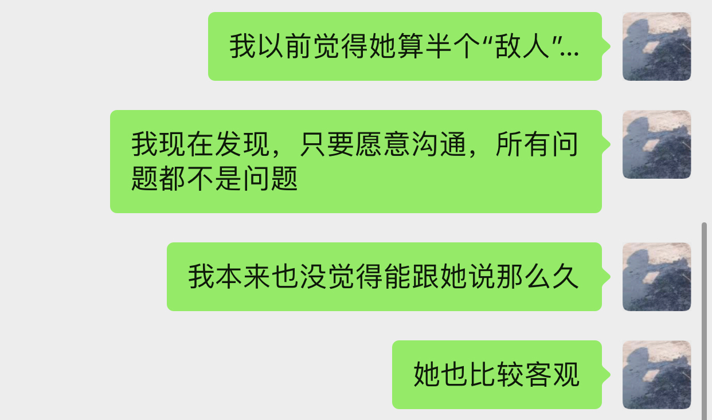
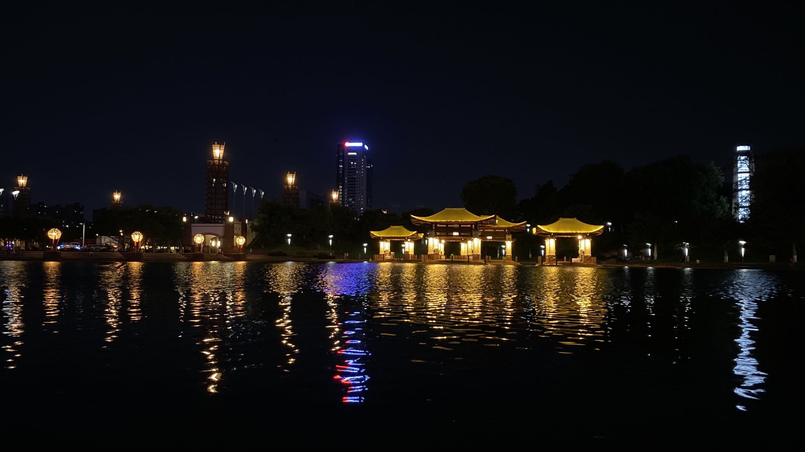
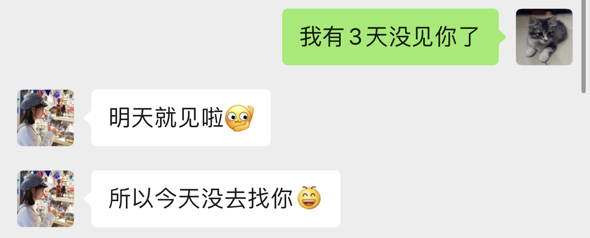

朝顔
Sunshine
保重啊，笨蛋．这一方面你就像个小孩……给我赶紧好起来．
下午做着做着实验，突然就很想你了😔．想你的时候我都会大声说出来，不过我不会让你担心的．
看到池塘里的花第一次随着时间改变而时开时闭，心里有一点惊喜．是啊，我长这么大从来没见过．有点少见多怪了．大自然就是这样的神奇．我也想你能看到它由开到合，由合到开的过程．不要因为每次看到它都闭着的，就以为它从来没有开过．答应我，不管我在不在，珍惜你身边的美．虽然我说了你可能也不信，你有着别人没有的能够发现身边美好事情的眼睛．
- 其实我之前有d怕你，虽然我理解你经常系我同丽华和她爸爸之间夹住做人都不好过，但因为你会摆来摆去，所以我会有d怕你．果阵同你食完饭之后，我就知道而且后来丽华有同我讲话你觉得我人品OK，但不适合结婚，我想知道点解．
- 其实我一直觉得你人系几好嘅，读书多，识得理解人．
- 系迷觉得我无钱啊？
- 吾系甘意思．
- 我果阵觉得自己好蠢，乜都甘直接，搞到我好似好无大志甘．后来我同我d朋友讲，距地都话我蠢．
- 后面最主要都系距爸嘅问题．我觉得做人真诚系岩嘅，宜家好多出面d人都讲一套做一套，果d人先吾好同距来往太多．
- 以前我无甘开放嘅，系前老板系呢方面教得我比较多．
- 几好，无一齐做野都可以多d联系．我地有d跟左30几年嘅人，都系同我地咩都放得埋一齐讲嘅，开心见诚．
- 关键系揾到个圈子，有d人就系吾钟意坦诚，同一个圈子大家都可以就最好啦．
- 阿姨，我同距d野你吾使担心，距好有分数，我都吾会乱来嘅．你真系可以放心，希望你比d信心距．
- 因为以前距都有同我讲过一d，我担心你地会比太大压力距，所以希望你地可以比距慢慢来．之前又听距话病左甘……
- 距爸之前系一心想距返来接手，所以无比距读研．我地都会嘅，距阿爸都有讲，最紧要身体健康，距做到几多得几多啦，都系要睇距自己．距都有同距爸讲过话，吾系个个都一定会似阿爸你甘做得甘成功嘅．我地都系叫距尽力就好啦，最紧要身体吾好有咩事，吾系多多钱都无用．
- 之前有听讲话，距爸爸觉得30岁就应该事业有成，先可以点样点样，我想知道到底距系点样睇的．
- 我都有同距讲，你睇下身边d人，有边个30岁就点样点样事业有成．包括你自己两个仔，都系摞住留比距嘅多，点样去比．但系距就系钟意摞呢d野出来讲．我都无晒距办法．
- 听讲果阵丽华被赶出来嘅时候，因为讲左d我好难听嘅说话，话我食软饭之类，丽华驳了嘴，先吵左起身．我想知你点睇呢样野．
- 我果阵都有话距，你吵时吵，做咩要甘讲人．有时候距自己嬲起身咩都讲得出，包括距对自己人都系甘．尤其系饮左酒之后．曾丽华又比较直，吾识得睇人眼色，直接驳返过去，甘迷吵左起身咯．距有时候自己讲左咩之后都吾知．就系嬲起身咩都讲得出．
- 距成日觉得自己上左年纪，身体真系差左好多．尤其系好多野要距拍板．又有高血压同冠心病……
- 我觉得呢d野都系同心态同生活方式有关嘅．距又烟又酒肯定会差d．
- 距每日都饮一支红酒……
- 我以前个老板，同距差吾多大，又迷要打理好多野，但系除左有白头发之外，人都系30几岁甘，心态又好．
- 距就系话吾听，可能做生意d人都系甘．
- 距比较硬颈．无咩兴趣爱好，15岁就出来打工，做左30几年野．净系识得做野，以前距父母都话距吾听．我都叫距，吾好理甘多后生d野．距地钟意点就点啦．年纪大左注意下身体，睇开d，对自己又好，对d后生又好．有d乜野事，到时候又迷要麻烦d后生．
- 甘样讲有d粗暴，不过我妈都经常甘讲……
- 我想知道，吾包括距爸，你自己真正点睇我同丽华呢件事，包括年龄．比如距爸爸就系100％反对果种．
- 做父母一般吾会想话叫距揾个特别大好多嘅，8岁我都理解．但最紧张对自己个女好，同埋距自己钟意．果阵有睇到你同距张相，距系真系好开心嘅．所以呢件事，我一直都系50％-50％甘．之前距都会同我讲话，阿妈，我同个男仔讲野果阵吾使收收埋埋，我d缺点距都会理解点样点样……
- 你甘优秀，应该有吾少女仔追嘅……
- 呢d野，吾系追吾追嘅问题……
- 甘又系，有时候感情呢d野……
- 就好似丽华果阵同我讲，呢d野系相互吸引……
- 距都有话，呢d我地甘做，可能会对距好吾好……
- 阿姨，你身体几好啊嘛？
- 宜家仲几好．我都无乜点去诊所．间吾中会出去办下事甘．
- 主要系精神上嘅事比较操劳吧……
- 系啊，有时有d野都需要我拍板，所以会伤神一d．你地成日用脑，要多d运动．
- 我有．
- 不如你留个电话啊，有咩都可以沟通下．
- 好啊．
- 你电话几多？我一阵打比你．
- 132501……
- （尴尬，屏幕出现了一个联系人）有个记录，之前存低左，吾记得左添．果阵距同我讲话，阿妈，死啦，我联系吾到距．又揾我又揾距表姐，我同距讲，人地都系一时好难受，接受吾到啫，吾使太担心……呢个我电话．
（会很容易忘记事，想不起来了．）

今天辛苦你了．半夜起来写下这几句，你说过不想事情带到第二天．这两天是我自己的问题，对不起．真心的．虽然你可能又会觉得我让你生气（或不开心，或不想和我说话）的次数又增多了……
我明白了：我最珍视的不是你我之间的无所不谈，而是在过程里 分享感受 这件事．
这两天是我自己没有摆正自己的想法、身份和心态，脑海里的东西太多，把问题搞复杂了……我对你的要求太多了．我把太多的我们加到了我和你身上，这是我说的我过于喜欢“表现自我”，像演自己的戏．
我想，大概这样的（被我搞出来的）小问题（可能也不算）可能会越积越多，直到你变得没有所谓……我内心难过亦无奈．这些《渐渐》在不知不觉拉开着我们．亦让你（在我们之间）变得越来越沉默（至少以前你不会经常这样）．我有点不安心……每次一想到，我就着急想要解决．我不想向那个方向发展，直到不愿分享．如果我阻碍了你的脚步，告诉我．
因为那些事，我变得太在意一些可能微不足道或者不是最重要的感受，而忽略了本身我们沟通交流里的感受，独自纠结．真的对不起，坦白说，我知道直面我内心并做出改变可能很难，但我会努力避免．
不知道有没有语无伦次……变得不太懂组织语言了．
最后，明天没有机会亲口跟你说一声生日快乐了（坦白说，挺重要的日子，没有办法跟你让你跟我分享喜悦，对我来说，是有些失望），只能在这里贴一句（三句）吧：
- 生日快乐！🎉🎉🎉
- 感谢你22岁的一大半有让我参与！
- 23岁要遇到和发现更好的你自己！❤️
晚安．加油！
你说起iPad的时候，想起你那时候说，等你买电脑的时候会问我一下．那时候我们还没有在一起．那时我想，到时我们一定在一起了，我帮你慢慢挑．而现在，两样都没有．
至少想在“这么特别”的日子，想离你近一点．

相识7个月．谢谢一路有你．依旧想你什么都直接说．
面对你，不知道怎样说谎．
昨晚做了一个梦，虽然知道不应该做．
我们在教室里上课，你坐在我隔壁组的右前方．我在听课，但你低着头不知道在写划着什么．突然老师点名提问，“丽华！”．坐在左边隔壁的隔壁的一组的一个叫华丽的女生起来了，似乎同学们和老师都没注意到起来的不是丽华．于是我伸长手去拍了拍你肩膀想告诉你老师正想要向你提问．你慢慢抬起了头看着我，然后我看见你在流泪……😔不知道为什么．
想跟你说话．
周末我们去自习吧．
30天，我没有很难过，不敢说快乐．不过，喜欢看到你元气满满的样子．晚安．⭐️

每天都是第一个来到这里，大楼打扫的阿姨总会看到我蹲坐在门口前，然后提着一大袋厕所的纸巾在我面前走过，用饱满的声音跟我说：“靓仔，早！”．然后我也会回一句：“阿姨早．”．爱听的不是那句“靓仔”，是那句“早”．相比之下，跟一起工作的人，基本就没有什么打过招呼．大家都是来了就默默工作了吧．
日本人比较喜欢打招呼，无论早午晚，不管是简单的「おはよう」还是「こんにちは」．即使是陌生人，距离一下就拉近了．当然，像之前你给我加油的时候，我也是元气满满．今天你也要加油哦．
（说到这里想起一件有趣的事：自从认识你之后，我发现我无论什么地方都能坐得下，只要不是湿漉漉的．以前也不是因为洁癖，更不是因为形象．但现在随便就能坐得下．上周五跟你打电话的时候，我就那样盘着腿坐在了对面那坐大厦前面的地上，吹着风，和你说话，听着你声音．）
记住那些不完美的次数，也是一件有意义的事情，至少可以看到自己这一段路走了多久．
看到你可以充实地工作，很替你高兴．无论哪一份工作，都希望看到你成长．也想你可以平衡好每一件事．一步一个脚印，期待你独当一面的日子来临．不知道什么时候才能看到你穿白大袍工作的样子．
每次看到你“正在输入……”又撤消的时候就让我很抓狂😞．
累了就好好休息．加油吧．
可以当蜗牛慢悠悠，但不可以只躲在壳里．🐌可以背着你的小房子慢慢前进．
任风吹干 流过的泪和汗 总有一天你有属于你的天
— 《蜗牛》
路过药店脚贱去称了一下，居然跌到了129.x．上次跟你走过初中旁边买水那，我们称了一下，一致认为秤坏了．今天我也这么觉得．😡给我一周时间吃回来给你看．
最近阴霾有点多，我散发的灰色也有点多．静下来的时候，依旧会想很多．我的，你的，我们的．但最后我现在最想做的，就是想像以前的以前一样，陪你去拥抱太阳．这么说可能有点文艺，但是，真的是我想说的．这样才最不辜负你的笑容．那时候可以，现在也可以．
☀️一定会好好的．一定要好好的．
嗯，我挺闷骚的．我承认．
看到你迈出第一步，心里甚是高兴．你就是有需要被推一把的时候．给我背下那几条吧．我想你变好．当然也只是我想而已．
小年轻，感觉状态不太对劲啊．不过这次不追问你，不管关不关我事．（当然大部分事都可以“不关我事”，我也没太看得起自己……）
以后也一样， 如果你想说，那我就在听． （其实一直以来也一样……）
早上大暴雨，突然又天晴了．看到你说上课，突然有点回忆4年前还是学生的样子．
出乎我意料，你居然果然不在正佳上课．
晾衣服的时候，想起那次送你回去，我们一起走去万达找东西吃．那时候说，我们下次要一起去逛宜家（IKEA）．
总结：
- 找到最适合自己的成长的方式．我从来没有把你当成是“特别的人”，但是你的环境和资源的确比较“特别”．所以如果不了解或者不清楚你的人，要想给你意见和帮助不会非常容易．不管是谁，在需要的时候，我想你可以主动地去寻求帮助（我也想（帮）你去成长）．最重要的是，一定，一定要找到你自己的节奏．
- 我F说的比较多的“气话”，从我口中向你传达需要勇气．但我不是TA所说的那么“不幸”，你也不是TA所说的那么“不负责任”．或许我有过委屈（而你也有），但我并没有以前我说的那种不甘．
- 我依旧珍视我们的存在，所以那几天的反复我会为了我自己的任性和乱来而感觉非常失望和懊悔．但这些对对错错，发泄也好，解释也好，争论也好，每次跟你说完话之后，总能让我有所释然．谢谢．
- 那天打电话，我跟你说“我喜欢你”，然后你说“承你错爱”，我有点生气．
- 你母亲可能只是，对你的担心超出了对你的信任．
- 今晚你愿意找我，谢谢你．
你说我们“至少”有一点相似，就是急着解释．“至少”不“至少”就不说了．不过，“急不急着”，我觉得是因为我和你都太喜欢沟通（说话），而又太在乎对方感受了．想起之前去后山的时候，语速真是飞快……无数次会陷入：“你讲先”，“都系你讲先”的境地……刚开始的时候还想装装斯文，在出门的时候总跟自己说，这次不能像上次一样那么噼里啪啦了……结果一开口，又情不自禁……😬
跟你聊天，总能让我回去想很多．所以说，跟你说过的话，比我认识你的前一年说过的，可能还要多．唯独不怕跟你比比．
Once you commit to a goal, it might take lots of thinking and many revisions to your plan over a considerable time period in order to finalize the design and do the tasks to achieve it. So you need to set goals without yet assessing whether or not you can achieve them.
This requires some faith that you really can achieve virtually anything, even if you don’t know how you will do it at that moment. Initially you have to have faith that this is true, but after following this process and succeeding at achieving your goals, you will gain confidence.
— Principles
无聊的时候我会拿出那时你的第一条语音来听．那时我跟我同学说，有个女孩的声音好像你．然后跟你见面之后，听到你真人说话之后，发现一点也不像呢．
突然想起和你散步时蹦蹦达达的样子，后来好像不是散步的时候都没看到你蹦达了．
每次过完周二，就可以预估一个星期要过完．现在不带实习生了，只留了一个．或许这样才是对他们最大的负责．自己又有什么本事去教别人什么呢．跟我把上面那一大段删除一样，现在才认识到自己没什么资格去让别人怎样做．做你自己，去变大变强，正如我一直看到的你一样．眼里的你没变，而我看你的眼神也没变．
戴着口罩的一个好处是，咬嘴唇的时候不会被人看到，不然别人总以为你在吃什么东西．
可能因为秋天，空调都觉得有点凉了．
最近的水，总是喝不完，每次都剩大概4厘米那么高．
倒垃圾的时候不小心走远了．地铁旁边有一间卖牛奶的店．那天晚上，我第一次过来这边，跟你说了几句之后，我在这里买了一瓶牛奶．然后就叫了车．唯一记得的是，在路上司机跟我说：你不要太晚回来，跨服务区要收取调度费！
看到一个概括的总结说：有的人由玫瑰变成了狐狸，有的人由狐狸变成了小王子．我觉得漏掉了一种情况，就是有的人一直是小王子．
想着至少得做一个玉子烧吧．结果还是失败了． 生日礼物（get）
想起问你打蛋的时候会不会很难，我觉得挺难的．不知道打才不会有气泡，每次打完都总有气泡．
有的人粘锅了，有人的卷不起来，而有的人打蛋的时候就失败了．用你的话来说：结果都一样．
上班抽空重看了一遍《小王子》，感觉这真是一本神奇的童话．
“如果有一个人爱上在这亿万颗星星中仅有的一朵花，这人望着星空的时候，就会觉得幸福．这时，他可对自己说，就在其中的一颗星星，有我的花儿在……但是，羊要是把这朵花儿吃掉了，对他来说，所有的星星一下子全都变为黑暗无光了，这难道不重要？”
午饭回来的时候听到孙燕姿的《Tonight，I feel close to you》：
……Tonight，I feel close to you……You open my door and light the sky above……
这首歌应该是我大一的时候，刚听日语歌认识仓木麻衣的时候听到的，后来才知道孙燕姿也有份唱．小太阳，今天，你也可以照耀乌云遮盖的大地．
不过今天天气不是很好，原来下雨了．
生日快乐．虽然你不过新历，不过今天可以多吃一点好吃的🍑．（大桃子最适合你了）
奶黄包、玉子烧、蛋包饭和味噌汤是想做的四种食物．
那时候我知道13号不是周末，但是会让你吃得到的．看到你吃得最开始的时候，第一次是在东海吃豚平烧，第二次是在伟兴吃腩云吞．我那时想着，今天一定会是第三次的．
格局小的事，要实现也可以这么的难．
理性和感性总是不停地在打架．不想让它们打架，不知道在不同事情上把它们割裂出来是不是一个好办法，什么时候才能自由地切换．
如果你决定好要和一个人创造羁绊，就要做好为他流泪的准备．
满天都是云，看不到一点星光．但它们就在那里．
静静地坐着，觉得自己在你面前，像个洋葱．一层一层剥去之后，里面只剩下空心．一片好，一片坏，都完完全全让你看到过．
手机没电是最大的威胁．
想起3号刚走到太古仓的时候，你说的是：希望以后有机会的话，想再去一次日本．
200天，谢谢．夏天过去，没有蝉叫．
不想让你觉得我回到了那天的状态．但我觉得我又做错了．常说做大事的人不拘小节，在大是大非面前可以果敢坚决的人，为什么就不能有小事的魂牵梦萦．
对不起．为什么我总是什么事情都做不好．
看了3次这21天的东西．发现有印象的只有几件事：
- 忘了那晚久坐所想．幸亏有写下来．
- 跟Tony约饭，聊了12小时．中间下雨了．
- 丽华生病了，她好憔悴．
- 昨天给她过了一个“生日”，有点自责．
- 养成了喜欢啃手指的习惯．
- 看了看21天没打扫的地面，掉了一些头发．
对不起．（我知道你肯定会说不可能，但真是只是我的错．）
我好讨厌我自己．
分手20天．也只有今天有机会跟丽华“庆祝生日”．
想起上一次去唱歌已经是研究生毕业的时候了．
希望今天丽华吃了也没事吧．不过，应该也算个包子．说过想让你吃奶黄包，不想这么也做不到．
心里有一个人，怎么回到没认识之前呢．
当听到最真实想法的时候，内心怎能毫无波澜．
我总是把好的事情搞砸．下午后面搞成那样，有点难过和自责．不想等了20天的几小时就这么过去，可是……我不是个什么伟大的人，也做不到放弃自己，但我同样不能轻易放弃我们．影响到你了，对不起．从你口中听到你说怕我的时候，我，突然很怕．我竟然把我们变成了这样……我在亲手葬送．
以前可能没有察觉到，现在渐渐意识到：我并不是一个可以给别人带来快乐的人．问题可能只是出在我自己身上，自己才是问题的根源．我好讨厌我自己．慢慢就会发现，自己根本没有资格说出珍惜我们之类的说话．
对不起，这样一个“生日”．第一次听你唱歌，内心是很高兴的．风华正茂的年纪，一定要加油．
08年的今天第一次很认真地追着奥运会来看．那时是大一暑假，丽华还在上四年级．在那以前，奥运会地我来说不过就是一个耳熟能详的盛会．高中以前的我也不怎么喜欢运动，也没有什么喜欢的运动明星．只知道在奥运会上拿金牌，是每个运动员毕业的梦想．
大一那年因为一个不认识的师兄，我喜欢上了打乒乓球．每天，他就自己一个人拿着球在那练练练，完全不顾乒协的人投来的异样的眼光，也不在意其它来休闲消遣的其他学生对他的指指点点．他就那样一个人在那里．一个拍，一个球，挥过去，嗒嗒……球掉出台外，到处蹦达，又再捡回来，一次又一次地重复着．无论我什么时候经过球室看过去，总能看到他熟悉的身影．我觉得他有点无聊，而看着他的我，似乎也有点无聊．只是看久了，竟然觉得他有点“帅”．他似乎正发着光．一段时间，出于好奇我过去搭讪了他．他对我的存在似乎也并不诧异．几番交谈，聊到了乒乓球，也聊到了王皓．谈及为什么他会天天在那练球，原来答案就几个字：无他，就是热爱而已．原来喜欢一样东西可以这么的纯粹，回想起过去10几年，自己竟然没有一个像样的兴趣爱好，突然觉得有点羞愧．
慢慢地，我也了解了一下乒乓球，突然被它的速度和旋转所吸引．原来除了数学之外，一项运动也可以这么有魅力．除了竞技的属性，原来还可以这么有趣！那一刻，我发现我也变得痴迷起来．那个师兄毕业了，我成为了下一个独自在球室练球的人．我并没有要他的联系方式，我们就这样“萍水相逢”．
奥运会开始的时候，我就想着要看乒乓球的比赛，要为皓哥加一把油．毕竟，他在04年成为了中国史上第一个进了奥运会决赛但没有拿金牌的中国人．暑假打开电视，各种电视台都争相播放着不同的比赛和节目，慢慢地，我发现原来除了乒乓球，其它的运动也同样那么有吸引力．开始的时候看射击，为杜丽捏过几把汗；到后面看体操的时候，一边看，一边查什么是难度几点几，什么是程菲跳什么是托马斯回旋……；看撑杆跳女王伊辛巴耶娃一次次翻过几米高的横杆时，内心无比激动和赞叹；看体操老将丘索维金娜为了生病的儿子再一次征战奥运会，心里实在感动……
最后，皓哥没有拿到金牌，成为了第一个两次进入奥运会决赛拿了银牌的中国人．四年后，他成为了第一个三次进入奥运会决赛拿了银牌的中国人．
那个暑假，第一次会觉得运动，那么有趣．那也是，一个民族自豪感泛滥的暑假．
第一次也许并不那么糟糕．今天似乎也一样．至少，吃下去之后到目前为止还没事……我们还有很多个呢．
对了，我最喜欢的体操项目是高低杠，那时拿金牌的小女孩何可欣，现在应该也亭亭玉立了吧．
立秋．西瓜还没吃，我们就“走”过了夏天．饭后散步的时候，感受不到夏天的气息，也感受不到秋天的气息．天很亮，但有乌云．气温不高，但有轻微闷热．原来天气也会让人感到那么暧昧．
我们聊到蝉会叫，小狗会吐舌头的时候，已经是第一次见面的时候了．每次几乎都会让你汗流夹背，实在有点于心不忍．那天走过彩虹公园的等红灯的时候，我问你热不热，然后你说小腿晒得好热，我们就赶紧躲到了树荫下面．雪糕，还没有吃呢．
夏天，就这么轻轻地来了，又悄悄地走了．眼下的夏天，眼下是秋天．只是有点匆匆．睡醒依然会心悸．好想见你．好想你．
那天当你被赶出来的时候，我第一反应想到的不是劝你回去．现在想起来，觉得自己真的是个人渣．为什么要让你经历这些，为什么．
今晚不小心又暗中观察了你．10米，既远又近．看到的像是枯萎了的丽华…坐着没精神，蹲着没力气…唯一想做的，就是过去摸摸你的头．所以你不用怕我会一直突然出现，需要的时候才会，我认为的．
虽然谁都会有偶尔暗淡的时候，还是小太阳的气质最符合你．一定要，赶快赶快好起来！要比这台风走得快，在大太阳来临之前，重新点燃自己，身边还有很多人很多事等着你来温暖呢！
遇到你的时候，你已经是灿烂的小太阳．
不一定每一次抗争，都总得自己面对，无论是心理上还是生理上．有不同的人陪在你身边，也有不同的方法值得去尝试．好的战略很重要，好的战术也同样重要．尤其当精神或意识没有强大到可以支配全局的时候，偶尔使用一下物理手段，其实与没有那么坏．而且，这并不颓废！
偶尔，我也想成为大太阳，像你拼命发光放热温暖身边所有人一样．虽然只是你．
没有见过很华丽的你，但相信我看到的，是真正的丽华．
对了，还可以给你找点能陶冶性情、拯救急性子的事儿？
见微知著．
谢谢你今晚跟我说了那么多．以前我常说，我不能控制你在我面前表现出来的是一个怎样的你．但当你向我敞开心扉的时候，我感受到了你对我的信任．不敢说要帮你还是怎样，但我会在你身边，静静地聆听你，也会分享我的感受．
“我听完你说的之后，我觉得应该抱有的态度是hopefully（| BrE ˈhəʊpfʊli,ˈhəʊpf(ə)li, AmE ˈhoʊpfəli |：抱有希望地）．”
“很多事情就像马拉松，最先到达终点的不是最先发力的，也不是最后全力冲刺的，而是全程匀速的人．你的问题只是，没有先积极或意识到要去提高你的平均速度．”
“不要把自己和发生在你（们）自己身上的事想得那么特殊，要放在时间上面去看．留心就会发现，你（们）身边有着像你（们）一样的经历或遭遇的人实在太多了．从中去理解和体会，尤其是当觉得问题无法解决的时候．你（们）只是很普通的一员，你（们）遭遇的同样很普通．”
“我觉得你经过这件事，应该需要有一些变化或进步．但我不建议你将赚钱作为你的根本目标．没错，赚钱不是一件坏事，它并且是所有商业行为的一个首要目标．最终，在赚到钱这一点上来看，从结果上来看，如果赚得到，它都会是结果里的一个重要部分，但除此之外其它部分又是什么呢？如果你将赚钱作为根本目标的话，在这一路上你可能会错过很多东西．成为了刘强东之后又怎样呢？是为了一口气？还是单纯为了证明自己？还是……？我觉得更重要的问题是： 然后呢？ 我没有否认只为赚钱的人的思想和态度，我个人只是并不是非常认同这一种想法．有比较多的人可能会在赚到钱之后才去想，或者不会想然后呢这个问题．不去思考这个问题，可能你就会陷入无穷无尽的想要赚钱的死循环里．开始你可以不清晰，可以变化和调整，但不要等到最后才去想或者不去想这个问题．”
“不知道你有没有听过一种说法大概是关于：discussion, argument和belief的．我在公司的时候一直是希望大家可以discussion，前提是我们在同一条船上，沟通和理解和尊重对方的想法，必须要尽量做到 对事不对人 ，可以反驳事情，也可以有情绪，但要记住大家是在探讨和解决问题．argument程度可能要强烈一些，虽然你们没有办法可以平静去探讨，但是，依然存在最终能达成共识的可能，这个双方都可能会需要努力．belief不一样的时候，就没有必要去争执和辩论了．就像一个信佛教，一个信伊斯兰教，可能就没有办法和平地对话．”
“以前你在公司的时候，总是经常有人来和我说： 「Tony，我觉得Riemann好像跟大家玩得不太来啊！」我没有办法向他们很好地解释这件事情．我希望大家可以从多个维度去看和了解身边的事和人．我们有立场，但要站到在对方的立场上去看身边的人和事不是一件简单的事，甚至不是真正切实站在对方的位置上的时候，有可能根本没有办法理解和体会．你有你的缺点，但是我也在你身上看到你发光的地方，也看到你在团队里的价值．KLG对所有人的包容度都是非常高的，可以意见不同，可以怼，并且非常鼓励，但必须是对事不对人．最终怎样发挥好每一个人的价值，并且 求同存异 才是最重要的．放到你和她身上是适用的，放到你和他身上也是适用的．”
“我上面说的感受和态度，并不是基于你说的有多动听，而是今天这12个小时交谈里，我看到了 你的变化 ．这一年时间里你肯定接触了其他的人和事，但是至少她在这大半年时间里陪伴你走过来．我相信她某些方面改变了你，是这一大段时间里的最重要因素．以前新员工培训的时候，大家总会八卦我和Shelly的事情．她身上有着我在别人身上看不到的特质，并且她也看到了我身上的，而这件事情本身，一直在促使着我们进步．我相信那个女孩，也因为你而发生了某些改变，或多或少，或是某个瞬间她才会想起，但它真实存在．这件事情本身，值得珍惜．”
“我自己的爱情或婚姻也不算成功，但是，遇到能交心和理解的人真的很难．互补还是相似这个问题也永远没有好的答案，所以你应该去羡慕在这个问题被发明之前的那些恋爱的人们，他们不用限定在各种条条框框上，而自己的感受最重要．但是，从我听到你的描述或者看到你的变化来说，你们，是可以能对得上话，相互理解，不惧怕自己认为内心的最不堪，并且共同进步，是难得的．像你说的，真诚很‘廉价’，但它也很宝贵．这是类似为什么我们招人的时候总是首要先看三点：人品、态度和价值观．没有问题是不能通过沟通解决的，而大多少岁，我觉得这不是一个belief问题．”
“现实就是这样的林林总总，会有各种奇葩的人和事．的确，你知道我和KLG都是相当open并且鼓励沟通的．这个世界上也有固执不愿意沟通的人，正如你说的她爸爸一样．但是这个事情为什么你或她想象中没有那么坏呢？很重要一点是，至少从你从她口里知道的，她爸爸是一个好人．他会有自己的个性，甚至功利，哪怕什么都是商字为先．但他是一个好人的话，他就会有他的软肋．从他能去把他女儿劝回来这一点可以看得出来．有他自己的特质，至少不是一件坏事．例如，他是一个好的商人，就看看重诚信等．你不要去想攻击他的软肋，或去他面前证明什么，尤其你知道他是一个相当固执的人．举个可能不恰当的例子，就是假如你要给他写信，你甚至没有必要跟他说要对他女儿好，要尊重她之类，对他来讲这是一个凌驾于他之上的行为．你只要做自己，表明你还喜欢着她，而她会因为缺少‘您’的支持，而不会真正地快乐．她会希望两边都能真正地快乐，她才是能真正发自内心笑出来的．这就足够了．的确，他很固执，她也认为她很固执，我没有让你去再搞大这件事情，而是，这件事给你和她都带来了巨大的冲击．但最重要的是 他 也是．没有这件事，他可能一辈子也会这样，但这一次，无论他承不承认，肯定对他数十年来的价值观等带来了冲击，哪怕他表现出来的是不爽．冰冻三尺，非一日之寒．”
“就像你写信，你要想好最坏的后果．最差的后果，可能就是他不看或直接丢掉．当你想好最坏结果的时候，先问自己能不能接受，如果能，再去考虑通过什么方式去改善这个最坏结果．你不要想去当面给他交信还是怎样，我更希望与期待的是有一天是他去找你，不管是出来讨厌、厌烦还是改观．在现在，你想一步到位解决问题的话，可能可以，但方式也可能非常复杂．但把时间拉长，解决这件事情所需要的方式可能会随着你们的相处等变得简单．”
“你想提升格局的一个最简单或入门级方法，就是把时间的维度拉长，然后将问题放到其中里面去思考．所以我现在比较喜欢读史．”
“首先是你自己信不信，然后是她信不信，最后是她爸爸信不信．不是信不信他会不会改变，是信不信你们的感情和感受，以及可以创造美好．”
“稻盛和夫说：\(\text{人生/工作的结果} = \text{思维方式} \times \text{热情} \times \text{能力}\)．这条公式有趣的地方在于，热情和能力的取值范围是\([0, 100]\)，而思维方式的取值范围却是：\([-100, 100]\)．”
“三个选择：1. 做你觉得舒服的事；2. 做有价值的事；3. 做有挑战性的事．”
“她眼下遇到的这个问题，我觉得也可以说是她的幸运．一是时间点上，如果等她二十六七，再遇到同样或者相似的问题，那个时候她变得更加有个性和独立，而她爸爸可能也更年迈，这件事情复杂程度就会变得高很多．并且，这个（些）冲突在这样的家庭下几乎可以预见，而不是避免不避免踩不踩雷的问题．二是你，你虽然做得不多，但你也面对了很多，尤其是这些天里情绪的大起大落，甚至绝望，我相信落差的冲击比绝对差值要大得多．而你一直陪在她身边并与她面对，对她来说，很难得的．对你来说，也很难得．”
“我觉得你之前跟她说争取一点时间是对的．但并不是让你去急着想着怎样去解决这个问题．你们的感情需要维系，因为它很宝贵和难得．我相信你自己感受得更清楚．时间这一点我想说的是什么呢，发生了这些事肯定给她带来了很多冲击．或者像刚刚说的，即便没有发生，你们也在相互改变和进步着．以前你在我眼里不是那种会觉得相信并努力就可以去做得到的人，并且不自信畏手畏脚．但今天至少我感受到了你这一变化．你也说到，在这大半年她给你带来了阳光，并且她可能没有意识到各种小事促成了你这一信念的变化，甚至你回过头来可能才会察觉．所以我不认同你说的你“谜之自信”这一看法．自信首先是好事，不管是不是你需要经历一大堆事才沉淀出来，甚至有些事你根本无法经历，像杀人放火．只要你不是自大的话，你只是没有察觉你自己的变化来源于哪．不一定要深究它来源于哪，这就是当下的因为一个人或一些事改变了的你．当你谈及反过来你也在努力让她相信这一点的时候，有意无意也好想她变得更好的时候，并想她学会自己选择的时候，她跟你说她只相信改变她觉得能改变的，我相信你肯定会很难过．但你无论作为导火索还是什么也好，你已经至少让她感受到有点不同，并为之努力过，虽然暂时放弃了．这个 时间 重要的是什么呢，要去 让她成长 ．给足够的长度和空间去让她成长．不但要让她成长，你还需要 帮她成长 ，因为你喜欢她，而无论你是什么身份．”
“我还是想你回来，我们再做一些有趣的事．”
— 2020.08.01 星巴克（香江锦绣）
我常常在想，什么才是失恋10天应有的姿态．这10天里，几乎没跟活人说过话，除了每天上班跟大佬在微信扯两句．
我对这10天的记忆几乎空白，除了记得在路边坐了一晚．所以那一晚到底想了些什么我也忘记了．倒是1个月前，才是历历在目．
每天就是告诉自己，要好起来，答应丽华的要做到，不要再让她担心，还有就是不可避免的会想到她．
人心肉做．纵使我是如此矫情．纵使有人跟我说做点与自己时间点相匹配的事情．是的，会复习准备跳槽，会学点管理学，还会看下大佬几年前送的书，会尽量让自己开心起来，至少在别人看起来得是……以前会有人跟我说，如果遇到失恋，就是你学新技能最好的时候了．以前的我会轻轻一笑，道理上来说挺对的，毕竟知乎上到处都是失恋之后就走去健身，然后开始各种新生活的小姐姐．那时我会一边笑，一边迫自己也去学着面对．
现在的区别是，我依然觉得这句话是对的，只是我不会强迫自己去做，做得更加淡定，而不会去刻意忘记身上还有着伤口．该痛的时候就让它痛吧．我不想变得麻木．正如我没有办法一边欺骗自己，一边写下这些废话一样．我知道那（曾经）存在的一切，都不是假的．唯一没做到的是，至今还没有去运动过．实在动不起来．应该是自从她被赶出来那天开始．失恋过，我依然不知道10天应该要有怎样的样子．
隐约感到今天她有点小情绪．
我会想，丽华应该会做得比我好一些，至少有身边人的陪伴．只是她可能最近状态效率什么还没恢复过来．所以这是我猜测她今天不太想理我的原因：
- 状态还没恢复过来，要面对和学习的事情有很多，再次焦虑；
- 看到了一些“东西”，然后想到了一些“东西”，然后又陷入深思；
- 觉得理我太多不太好，感到有压力；
- 单纯觉得我烦；
- 发生了其它的事．
答案，都有了．如果没看到，我想亲口说．
至于我，为了不再让她担心，我还是找CEO聊聊吧．大部分时间做回曾经眼里的我，小部分时间偷偷伤心难过；心理上态度积极，不管是何种方向，生理上暂时没有办法．
令我郁闷是，无论从前，过去，还是现在，当她不想理我的时候，除了自己郁闷，我是毫无办法……默默加油吧．